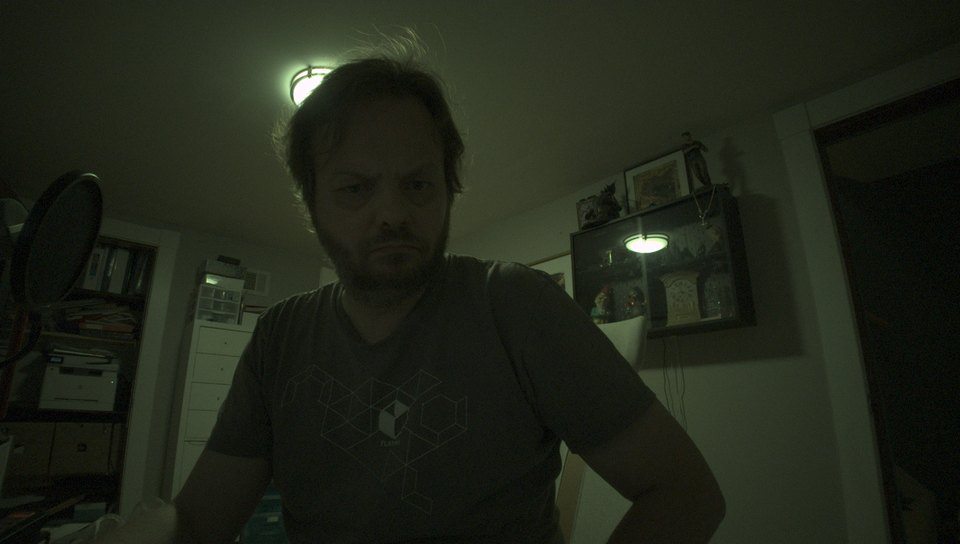
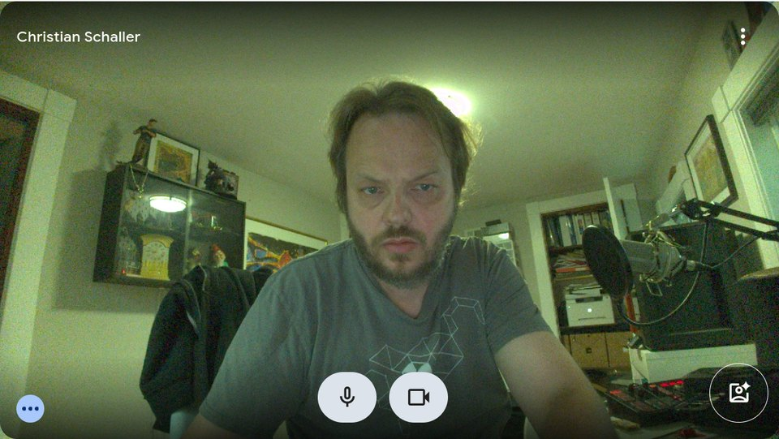
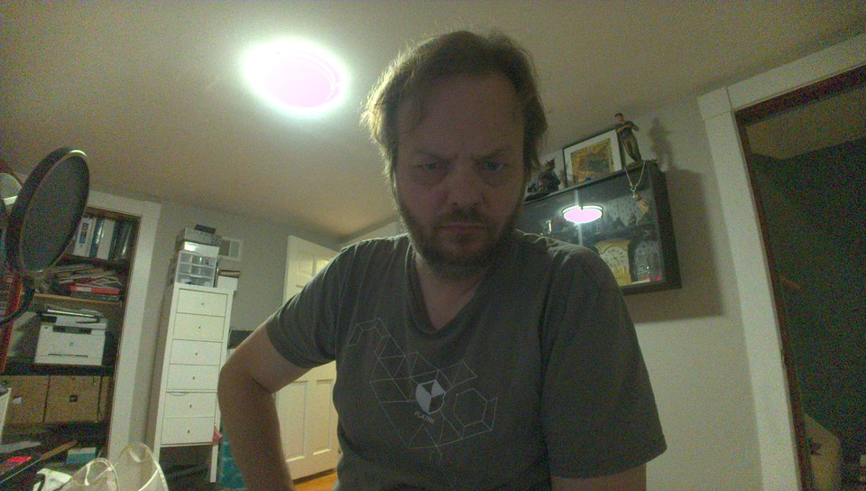
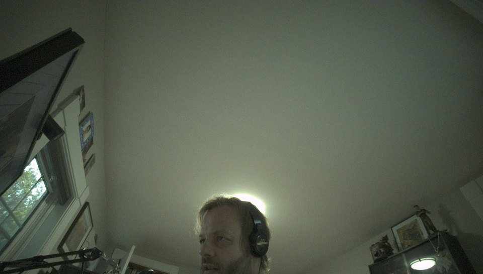
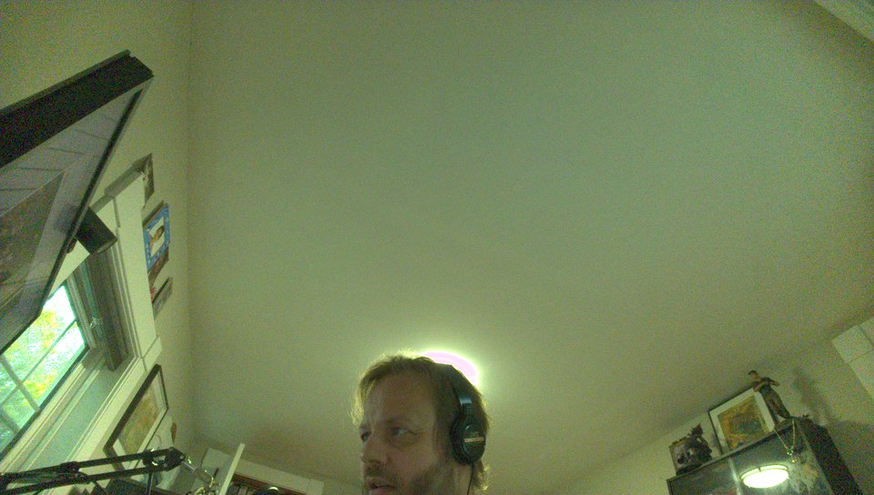
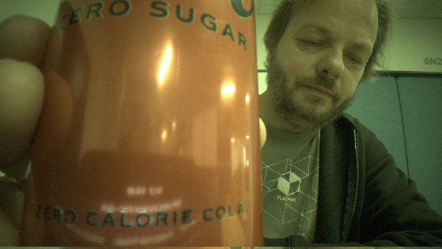
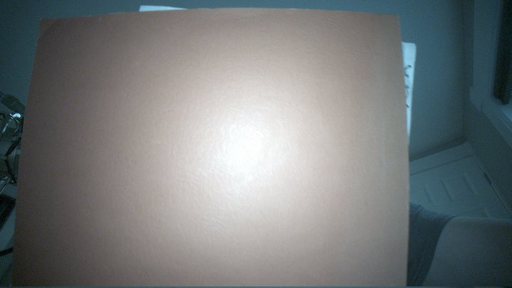

Five defects across the kernel sensor driver and libcamera's software ISP left this camera dark, heavily vignetted and tinted yellow-green. Here is what was wrong, how it was measured, and what changed.
Three stages of the same camera. Each image is what the pipeline actually produced at that point — including the middle one, where the fixes were half in and the result was briefly worse in one respect than where it started.
The first and last images are a controlled pair: same seat, same lamps, laptop not moved between them, and the stock side recaptured on a stock kernel with stock libcamera reinstalled rather than simulated. Both were held for 400 frames so that auto-exposure and auto white balance had fully settled — in a room this dim they need roughly 250, and a shorter capture flatters whichever side is measured first.



Stage 2 is worth dwelling on. The colour matrix was correct the whole time — it preserves neutral to within 0.002% and behaved exactly as predicted on real captures. What it could not do was fix the white balance error being fed to it, and increasing saturation amplifies whatever imbalance it is given. Removing the matrix looked like the fix; finding the black level bug underneath it was the actual fix.
A Sony IMX471 (16 MP, 4656×3496) behind an Intel IPU7. The IPU7 driver in Linux is input-system only — it delivers raw Bayer and never touches the hardware ISP — so every bit of processing is done by libcamera's software ISP on the CPU or GPU. That makes the software ISP's correctness the whole story.
V4L2_SEL_TGT_CROP ended its case with break and fell through to
return -EINVAL, and no crop rectangle was ever stored in the subdev state.
libcamera says so itself:
imx471 0-001a: Unable to get rectangle 0 on pad 0/0: Invalid argument
imx471 0-001a: The sensor kernel driver needs to be fixed
imx471 0-001a: The analogue crop rectangle has been defaulted to the active area sizeThe sensor actually reads out 3856×2176 of its 4656×3496 array, so every geometry-dependent correction was being computed against the wrong rectangle.
TEST_PATTERN_MODE was declared CCI_REG8 when 0x0600 is a 16-bit
register, so selecting a pattern wrote the mode into the high byte and the sensor stayed on
the live scene. The control read back correctly the whole time, which is what made it
confusing. Every other 16-bit register in the driver was already correct; 0x0600 was the
only outlier.
The gain law is gain = 1024 / (1024 - code). The driver capped the code at
800, giving 4.57×, where the sensor reaches 16× at code 960. Verified on hardware:
| code | predicted | measured |
|---|---|---|
| 0 | 1.000× | 1.000× |
| 512 | 2.000× | 2.000× |
| 800 | 4.571× | 4.571× |
| 960 | 16.000× | 16.071× |
libcamera's software ISP had no lens shading support for any sensor. On this camera the corners are about 2.7 stops down, and the falloff is channel-dependent: red needs 6.35× gain in the corners where blue needs 5.27×.
AWB statistics are summed in the sensor's native bit depth, but the black level
subtracted from them is held in a uint8_t. For a 10-bit sensor black is
under-subtracted fourfold, which inflates all three channels equally and drags every gain
towards 1.0 — so the camera hardly white-balances at all.
Measured gains were 1.035 / 1.070 where grey world requires
1.316 / 1.806. This affects every RAW10 and RAW12 sensor using the
software ISP, not just this one.
Measured on a flat painted ceiling, at identical coordinates in both frames, with a USB webcam on the same machine shooting the same room as the reference:
| Low-light scene, both converged | R/G | B/G | Frame brightness |
|---|---|---|---|
| Stock | 0.890 | 0.672 | 31.1 |
| All five fixes | 1.047 | 0.823 | 90.9 |
| USB webcam reference | 1.052 | 0.989 | — |
The same scene seconds apart, with lens shading correction off and on. Centre-to-corner falloff goes from 2.78× to 1.09×.


Channel ratios at the output in brighter light, with a USB webcam on the same machine as a reference. 1.000 is neutral. The vignetting column comes from the controlled flat-field pair above.
| Configuration | R/G | B/G | Vignetting |
|---|---|---|---|
| Stock | 0.871 | 0.667 | 2.78× |
| + lens shading | 0.974 | 0.855 | 1.09× |
| + AWB fix and colour matrix | 1.001 | 0.870 | 1.09× |
| USB webcam reference | 0.99 | 0.97 | — |
The lens shading grids and colour matrices were extracted from Intel's Windows camera driver package, which ships per-module tuning blobs in a CPFF container. The publicly available ipu6-camera-bins headers describe the format only partially — the 4×4 lens shading record in particular is named but not defined — so the layout was derived from the data and then checked.
Three independent checks that the decoding is right: every one of the 36 shading grids
minimises at exactly the geometric centre with a value of precisely 1.000; the two green
channels agree to three decimal places, which identifies them and confirms RGGB ordering;
and channel falloff is ordered red > green > blue, as physics requires. Separately,
libcamera master already carries a CameraSensorHelperImx471 with
gain = 1024 / (1024 - code) and a black level of 64 DN, arrived at
independently — both match.


Prebuilt Fedora 44 packages are attached to the releases. The libcamera package is a drop-in: same soname, so PipeWire and WirePlumber are unaffected.
sudo dnf install ./libcamera-0.7.1-*.lsc2.fc44.x86_64.rpm \
./libcamera-ipa-0.7.1-*.lsc2.fc44.x86_64.rpm \
./libcamera-tools-0.7.1-*.lsc2.fc44.x86_64.rpm
systemctl --user restart wireplumberThe kernel patches apply to mainline and to the Fedora 7.2.8 package, whose copy of the
driver is byte-identical. sudo dnf downgrade libcamera reverts.
findings/ includes the measurement mistakes and
the conclusions they produced before being corrected. They are left in deliberately: several
were only caught by comparing against a second camera.